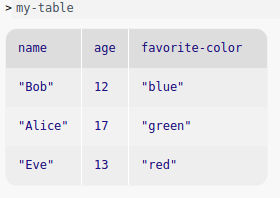
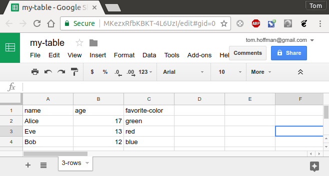
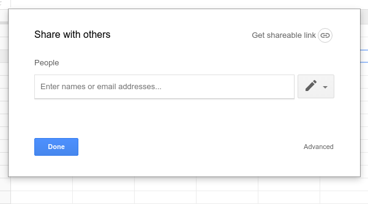
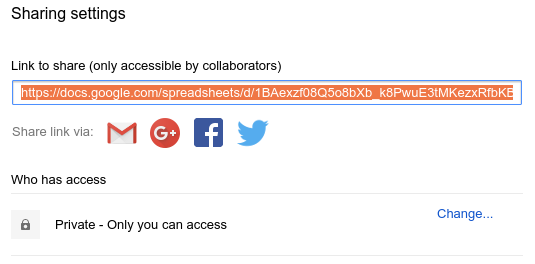
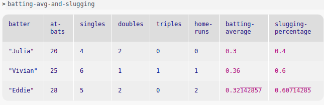
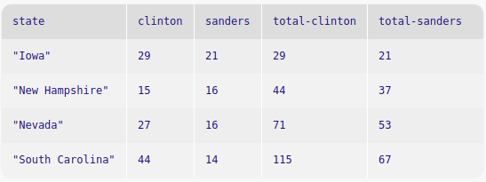

3.6 Tables
A Table is made up of rows and columns. All rows have the same number of columns, in the same order. Each column has a name. Each column may also be assigned a type via an annotation; if so, all entries in a column will then be checked against the annotation. Unsurprisingly, they are useful for representing tabular data from sources like spreadsheets or CSV files.
Note: The Table data type and the syntax for manipulating tables is built in to Pyret without needing any imports; however, using the Reducers or the functions in Advanced Table Manipulation require the import line above.
3.6.1 Creating Tables
A simple Table can be directly created with a table: expression, which lists any number of columns, with optional annotations, and then any number of rows. For example, this expression creates a table with three columns, name, age, and favorite-color, and three rows:
my-table = table: name :: String, age :: Number, favorite-color :: String row: "Bob", 12, "blue" row: "Alice", 17, "green" row: "Eve", 13, "red" end
Indeed, my-table is used as a running example in much of the following.

3.6.2 Loading Tables
Pyret supports loading spreadsheets from Google Sheets and interpreting them as Pyret tables.
Currently no public interface for creating additional sources beyond Google Sheets is supported.
You can import most relevant file types, including .xlsx, into Google Sheets, and then into Pyret, so you should be able to get almost any tabular data into Pyret with a little effort.
In Google Sheets, you create a file, referred to as a "spreadsheet" that contains one or more grids called "sheets." Excel refers to the file as a "workbook" and each grid as a "worksheet." We will follow Google Sheets’ nomenclature.
Pyret assumes each sheet contains only one table of neatly formatted data, without skipping columns or extra comments other than an optional single header row at the top.
As a simple and consistent example, let’s say we wanted to import the my-table data from a spreadsheet.

To import this data into a Pyret program, you need to get the spreadsheet’s unique Google ID. The easiest way to do this is to click on the blue Share button in the upper right.

If you don’t want to share your spreadsheet with anyone else, click Advanced in the lower right of the Share with others dialog, then copy the Link to share, highlighted in orange below, and paste it into your Pyret definitions area (or another editor).

The URL will look something like
https://docs.google.com/spreadsheets/d/1BAexzf08Q5o8bXb_k8PwuE3tMKezxRfbKBKT-4L6UzI/edit?usp=sharing
The Google ID is the part between /d/ and /edit..., in this case:
1BAexzf08Q5o8bXb_k8PwuE3tMKezxRfbKBKT-4L6UzI
If you do want to share the spreadsheet with others, click on the blue Share button as above, and then click Get sharable link, choose the appropriate level of sharing, and copy the URL to get the Google ID as above.
Now you can load the spreadsheet into your Pyret program:
import gdrive-sheets as GS imported-my-table = GS.load-spreadsheet("1BAexzf08Q5o8bXb_k8PwuE3tMKezxRfbKBKT-4L6UzI")
You can use include instead of import as... to cut down on some typing by omitting the GS. before the tables module functions.
include gdrive-sheets imported-my-table = load-spreadsheet("1BAexzf08Q5o8bXb_k8PwuE3tMKezxRfbKBKT-4L6UzI")
We’ll use import and the prefix GS. in the following examples. If you use include, omit GS. where used below.
When data is loaded into a table, we recommend using sanitizers to properly load each entry of the table as the correct Pyret type. The supported sanitizers are imported from the data-source module.
The sanitizers currently provided by Pyret are:
string-sanitizer tries to convert anything to a String
num-sanitizer tries to convert numbers, strings and booleans to Numbers
bool-sanitizer tries to convert numbers, strings and booleans to Booleans
strict-num-sanitizer tries to convert numbers and strings (not booleans) to Numbers
strings-only converts only strings to Strings
numbers-only converts only numbers to Numbers
booleans-only converts only booleans to Booleans
empty-only converts only empty cells to nones
While the data-source library provides sanitizers which should cover most use cases, there may be times when one would like to create a custom data sanitizer. To do so, one must simply create a function which conforms to the Sanitizer type in the data-source module.
Use the load-table: expression to create a table from an imported sheet.
Each spreadsheet file contains multiple, named sheets, displayed as tabs across the bottom of the Sheets user interface. When you start working with the data in an imported spreadsheet, you need to indentify which sheet you are using as the data source.
The source: expression should be followed by the imported spreadsheet, calling the .sheet-by-name method with two arguments, the sheet name and a boolean flag indicating whether or not there is a header row in the sheet that should be ignored. In our example above, imported-my-table contains one sheet, called 3-rows, and there is a header row that should be ignored by the importer, so the source: expression would be written as illustrated below.
import gdrive-sheets as GS import data-source as DS imported-my-table = GS.load-spreadsheet("1BAexzf08Q5o8bXb_k8PwuE3tMKezxRfbKBKT-4L6UzI") my-table = load-table: name :: String, age :: Number, favorite-color :: String source: imported-my-table.sheet-by-name("3-rows", true) sanitize name using DS.string-sanitizer sanitize age using DS.strict-num-sanitizer sanitize favorite-color using DS.string-sanitizer end
In general, it is safest to sanitize every input column, since it is the only way to guarantee that the data source will not guess the column’s type incorrectly.
Note that Google Sheets, and other spreadsheets, themselves assign or infer types to data in a way that often is not apparent to the user and is a common source of errors when exporting from or between spreadsheet applications.
3.6.3 Selecting Columns
The select expression can be used to create a new table from a subset of the columns of an existing one. For example, we can get just the names and ages from my-table above:
names-and-ages = select name, age from my-table end check: names-and-ages is table: name, age row: "Bob", 12 row: "Alice", 17 row: "Eve", 13 end end
3.6.4 Filtering Tables
The sieve mechanism allows for filtering out rows of tables based on some criteria. The using keyword specifies which columns may be used in the body of the sieve expression.
For instance, we can find the individuals in my-table who are old enough to drive in the United States.
can-drive = sieve my-table using age: age >= 16 end check: can-drive is table: name, age, favorite-color row: "Alice", 17, "green" end end
Note that the sieve block must explicitly list the columns used to filter out values with using. The following would signal an undefined name error for age, because names being used in the expression body must be listed:
can-drive = sieve my-table using name: # age is not visible inside of this expression age >= 16 end
3.6.5 Ordering Tables
To arrange the rows of a table in some particular order, use an order expression. This can be done with any column whose type supports the use of < and >, including Strings.
name-ordered = order my-table: name ascending end check: name-ordered is table: name, age, favorite-color row: "Alice", 17, "green" row: "Bob", 12, "blue" row: "Eve", 13, "red" end end
Tables can be sorted by multiple columns. In general you may select as many columns as desired, and can mix and match ascending and descending sorts. No column can be mentioned more than once.
order some-table: column1 ascending, column3 descending, column2 ascending end
This example will first sort the data in increasing order on column1. If there are any duplicate values in column1, each such group of rows will be sorted in decreasing order by column2. If there are any duplicates in both columns, each remaining group will be sorted in increasing order by column3.
3.6.6 Transforming Tables
The transform expression allows the changing of columns within a table, similar to the map function over lists (and, just like map, transform expressions do not mutate the table, but instead return a new one).
age-fixed = transform my-table using age: age: age + 1 end check: age-fixed is table: name, age, favorite-color row: "Bob", 13, "blue" row: "Alice", 18, "green" row: "Eve", 14, "red" end end
3.6.7 Extracting Columns from Tables
A large number of Pyret modules work on lists instead of tables, so it may be desired to pull the contents of one column of a table as a list to use it elsewhere. The extract mechanism allows this ability, and serves as the primary link between processing tabular data and non-tabular Pyret functions.
name-list = extract name from my-table end check: name-list is [list: "Bob", "Alice", "Eve"] end
3.6.8 Extending Tables
"Extending" a table means to create a new table with an additional, calculated column. There are two types of extensions which can be made to tables: mapping extensions and reducing extensions.
3.6.8.1 Mapping extensions
A mapping column is one whose contents are calculated from other columns only in the row it is being added to. This is analogous to the map function for lists.
In a mapping expression, the body of the expression defines the name of the new column or columns followed by an expression which calculates the new value to be placed in each row of the new column.
can-drive-col = extend my-table using age: can-drive: age >= 16 end check: can-drive-col is table: name, age, can-drive row: "Bob", 12, false row: "Alice", 17, true row: "Eve", 13, false end end
Another example creates a new table including baseball players’ calculated batting average and slugging percentage in extended columns:
batting = table: batter :: String, at-bats :: Number, singles :: Number, doubles :: Number, triples :: Number, home-runs :: Number row: "Julia", 20, 4, 2, 0, 0 row: "Vivian", 25, 6, 1, 1, 1 row: "Eddie", 28, 5, 2, 0, 2 end batting-avg-and-slugging = extend batting using at-bats, singles, doubles, triples, home-runs: batting-average: (singles + doubles + triples + home-runs) / at-bats, slugging-percentage: (singles + (doubles * 2) + (triples * 3) + (home-runs * 4)) / at-bats end

As in transform, you must specify which columns will be used to calculate the value in the extend expression using the using keyword.
3.6.8.2 Reducers
A "reducing" column is one whose information is computed from the row it is being added to and one or more of the rows above that row. This is analogous to the fold function for lists.
The simplest examples of reducing use reducers built into Pyret.
For each reducer below, you will need to specify a name for the new column and which existing column new value will be based on. You will also need to import or include tables.
Creates a new column where in each row, the running sum will be the added value of the cell in the selected column plus all the cells above the cell in the same column.
import tables as T dem-primary-delegates = table: state :: String, clinton :: Number, sanders :: Number row: "Iowa", 29, 21 row: "New Hampshire", 15, 16 row: "Nevada", 27, 16 row: "South Carolina", 44, 14 end running-total-delegates = extend dem-primary-delegates using clinton, sanders: total-clinton: T.running-sum of clinton, total-sanders: T.running-sum of sanders end print(running-total-delegates)

The difference extender creates a new column containing the difference between the value in the current row (of the selected column) minus the value in only the row directly above. In the first row, the value is unchanged. Since there’s no value before the first row, Pyret behaves as if it were zero.
Both difference and difference-from do not calculate a running difference, only the difference between the selected row and the single row above.
import tables as T test-scores = table: year :: Number, math-score :: Number, reading-score :: Number row: 2014, 87, 89 row: 2015, 98, 93 row: 2016, 79, 83 row: 2017, 85, 90 end changes-by-year = extend test-scores using math-score, reading-score: math-change-from-previous: T.difference of math-score, reading-change-from-previous: T.difference of reading-score end
Like difference, except the starting value is specified, instead of defaulting to 0.
# calculates velocity of a dropping ball ball-info = table: pos-y row: 25 row: 24 row: 21 row: 16 row: 0 end with-velocity = extend ball-info using pos-y: vel-y: T.difference-from(25) of pos-y end check: with-velocity is table: pos-y, vel-y row: 25, 0 row: 24, -1 row: 21, -3 row: 16, -5 row: 0, -16 end end
Creates a new column where the value in each row is equal to the mean of all values in the designated column in the current row and above.
import tables as T my-grades = table: score :: Number row: 87 row: 91 row: 98 row: 82 end with-running-mean = extend my-grades using score: mean: T.running-mean of score end check: with-running-mean is table: score, mean row: 87, 87 row: 91, 89 row: 98, 92 row: 82, 89.5 end end
Creates a new column that contains the maximum or minimum value in the selected column in the current row or above.
some-numbers = table: n :: Number row: 4 row: 9 row: 3 row: 1 row: 10 end with-min-max = extend some-numbers using n: max: T.running-max of n, min: T.running-min of n end check: with-min-max is table: n, max, min row: 4, 4, 4 row: 9, 9, 4 row: 3, 9, 3 row: 1, 9, 1 row: 10, 10, 1 end end
running-fold and running-reduce allow you to specify a function used to calculate the value in the new column, based on a running calculation of all the values in the selected column in the current row and above.
The difference between running-fold and running-reduce is that running-fold requires an explicit start-value.
import tables as T count-if-driver = T.running-fold(0, lam(sum, col): if col >= 16: 1 + sum else: sum end end) t = table: name, age row: "Bob", 17 row: "Mary", 22 row: "Jane", 6 row: "Jim", 15 row: "Barbara", 30 end with-driver-count = extend t using age: total-drivers: count-if-driver of age end check: with-driver-count is table: name, age, total-drivers row: "Bob", 17, 1 row: "Mary", 22, 2 row: "Jane", 6, 2 row: "Jim", 15, 2 row: "Barbara", 30, 3 end end checks = table: check-number :: Number, withdrawal :: Number row: 001, 50 row: 002, 100 row: 003, 500 end with-checking-balance = extend checks using withdrawal: current-balance: T.running-fold(1000, lam(total, col): total - col end) of withdrawal end check: with-checking-balance is table: check-number, withdrawal, current-balance row: 001, 50, 950 row: 002, 100, 850 row: 003, 500, 350 end end
While the reducers found in the tables module should cover most all use cases, there may be times when one would like to create a reducer of their own. To do so, one must construct an object of the following type:
Reducers are essentially descriptions of folds (in the list fold sense) over table columns. The way reducers are called by the language runtime is as follows: the value(s) from the first row are passed to the reducer’s .one method, which should return a tuple containing both any accumulated information needed for the fold and the value which should be placed in the new column in that row. The remaining rows are then sequentially populated using the reducer’s .reduce method, which is identical to the .one method except that it receives an additional argument which is the previously mentioned accumulated information from the previous row.
import tables as T running-mean :: T.Reducer<{Number; Number}, Number, Number> = { one: lam(n): {{n; 1}; n} end, reduce: lam({sum; count}, n): { {sum + n; count + 1}; (sum + n) / (count + 1) } end }
3.6.9 Comparing Tables
The order of both rows and columns are part of a table value. To be considered equal, tables need to have all the same rows and columns, with the rows and columns appearing in the same order.
3.6.10 Advanced Table Manipulation
The operations listed above come with a significant restriction: all column names must also be valid identifier names. In addition, column names are always chosen directly by the programmer in each query, and there’s no way to abstract over them.
To see why this is a significant restriction, consider this (non-working) example:
fun sieve-by-large-number(t :: Table, colname :: String) -> Table: doc: ```Return a new table containing the rows of t whose column named by the string provided for colname have value greater than 1000``` sieve t using colname: colname > 1000 end where: my-t = table: item, price row: "Chromebook", 250 row: "Macbook", 1300 end sieve-by-large-number(my-t, "price") is table: item, price row: "Macbook", 1300 end end
We may well want to write this if we have a number of tables, all of which we want to sieve by the same criteria. However, it isn’t possible to abstract over a column name using sieve: the program above conflates the identifier colname with the column name colname. As a result, that program gives an error that the colname in the query shadows the colname that’s a parameter of the function.
Pyret provides facilities for writing programs like the above, they are simply a different set of operations than the query syntax. These table manipulation operations are useful for building abstractions over tables and for creating tables programmatically.
Takes a sequence of tuples and constructs a Row value. Note that the type for each column may be different. The constructed row can be added to appropriate tables by using the table methods like .add-row.
It is often preferable to construct rows for an existing table by using the .row method, which avoids typing out the names of each column for each created row, and provides built-in checking for the count of columns.
Produces a list of strings containing the names of the columns in the row.
check: r = [raw-row: {"city"; "NYC"}, {"pop"; 8500000}] r.get-column-names() is [list: "NYC", "pop"] end
Consumes the name of a column, and produces the corresponding value. Results in an error if the value isn’t found. Square-bracket ([]) accessor syntax uses get-value, which is often more pleasant to write than writing out get-value fully.
check: r = [raw-row: {"city"; "NYC"}, {"pop"; 8500000}] r.get-value("pop") is 8500000 r["pop"] is 850000 end
Consumes the name of a column, and produces a some containing the corresponding value if it’s present, or none if it isn’t.
A collection constructor that creates tables from Row values.
check: t = [table-from-rows: [raw-row: {"A"; 5}, {"B"; 7}, {"C"; 8}], [raw-row: {"A"; 1}, {"B"; 2}, {"C"; 3}] ] t.length() is 2 t.column("A") is [list: 5, 1] t.row-n(0) is [raw-row: {"A"; 5}, {"B"; 7}, {"C"; 8}] end
Evaluates to the number of rows in the table.
- .row :: (
- col-1 :: Col1,
- col-2 :: Col2,
- ... :: ...,
- col-n :: ColN
- )
- -> Row
Consumes one value for each column in the table, and produces a Row value where each provided value is associated with the appropriate column.
check: t = table: city, pop row: "NYC", 8.5 * 1000000 row: "SD", 1.4 * 1000000 end r = t.row("Houston", 2.3 * 1000000) r is [raw-row: {"city"; "Houston"}, {"pop"; 2.3 * 1000000}] end
Consumes an existing table, and produces a new table containing an additional column with the given colname, using compute-new-val to produce the values for that column, once for each row.
Here, Col is the type of the new column, determined by the type of value the compute-new-val function returns.
check: foods = table: name, grams, calories row: "Fries", 200, 500 row: "Milkshake", 400, 600 end foods-with-cpg = table: name, grams, calories, cal-per-gram row: "Fries", 200, 500, 500/200 row: "Milkshake", 400, 600, 600/400 end fun add-cpg(r :: Row) -> Number: r["calories"] / r["grams"] end foods.build-column("cal-per-gram", add-cpg) is foods-with-cpg end
fun add-index(t): var ix = -1 t.build-column("index", lam(_) block: ix := ix + 1 ix end) where: before = table: name row: "Joe" row: "Shriram" row: "Kathi" end after = table: name, index row: "Joe", 0 row: "Shriram", 1 row: "Kathi", 2 end add-index(before) is after end
Consumes a column name and a list of values, and produces a new table with a columng of the given name added, containing the values from new-vals.
It is an error if the length of new-vals is different than the length of the table.
Consumes a table and a row to add, and produces a new table with the given row at the end.
Consumes an index, and returns the row at that index. The first row has index 0.
Consumes the name of a column, and returns the values in that column as a list.
This method is no longer used (use .get-column instead).
Consumes an index, and returns the values in the column at that index as a list. The first column has index 0.
Consumes no arguments, and produces the names of the columns of the table as a list.
Consumes no arguments, and produces a list containing all the rows in the table, in the same order they appear in the table.
Consumes no arguments, and produces a list of lists of the column values. The columns and values appear in the same order they appeared in the table.
Consumes a predicate over rows, and produces a new table containing only the rows for which the predicate returned true.
Consumes a column name and a predicate over the values of that column, and produces a new table containing only the rows for which the predicate returned true for that column. The type of argument to the predicate has the type of values in the specified column.
Consumes a column name and whether to order ascending or descending, and produces a new table with the rows ordered by the given column.
If true is given for asce, the rows are ordered lowest to highest by the given column (e.g. using <), and if false is given, they are ordered highest to lowest.
Consumes a list of tuples describing column orderings, and produces a new table according to the given ordering.
Each element of the list must be a two-element tuple, containing a column name and a boolean indicating whether to order ascending or not. As with .order-by, true indicates ascending and false indicates descending.
Like .order-by, but ascending is always true.
Like .order-by, but ascending is always false.
Consumes a list of column names, and produces a new table containing only those columns. The order of the values in the columns is the same as in the input table, and the order of the columns themselves is the order they are given in the list.
Consumes a column name and a transformation function, and produces a new table where the given function has been applied to all values in the specified column of the original table.
Produces a new table where the specified column name in the original table has been renamed to the new name. The new name must not already be present in the table’s columns.
fun rename-column(t :: Table, old-colname :: String, new-colname :: String): new-t = t.build-column(new-colname, lam(r): r["old-colname"] end) new-t.drop("old-colname") end
Returns a new table containing all the rows of this table, followed by all the rows of the bot-table. The column names must all match, but the order is not required to match.
check: t1 = table: city, pop row: "Houston", 2400000 row: "NYC", 8400000 end t2 = table: pop, city # deliberately reversed column order for this example row: 1400000, "San Diego" end t1.stack(t2) is table: city, pop row: "Houston", 2400000 row: "NYC", 8400000 row: "San Diego", 1400000 end t2.stack(t1) is table: pop, city row: 1400000, "San Diego" row: 2400000, "Houston" row: 8400000, "NYC" end end
Returns a new table with the same columns as this table, but with all rows removed.
check: t1 = table: city, pop row: "Houston", 2400000 row: "NYC", 8400000 end t1.empty() is table: city, pop end end
Returns a new table that contains all the data from this table except the specified column.
check: t1 = table: city, pop row: "Houston", 2400000 row: "NYC", 8400000 end t1.drop("city") is table: pop row: 2400000 row: 8400000 end t1.drop("pop") is table: city row: "Houston" row: "NYC" end end